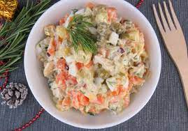
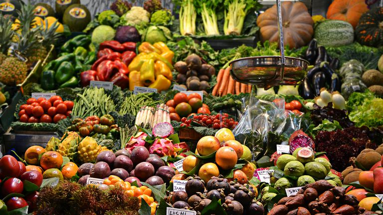

Mayonnaise Salad

Description
This is a recipe for a mixture of different vegetables cooked with a cold mayonnaise. It goes well with all kinds of dishes and is very refreshing.
Can serve up to 8 people.
Ingredients

- 2 Carrots
- 4 Potatoes
- 1 Chayote
- 1 Apple
- 250g of mayonnaise
- Oregano(optional)
Steps
- Pour 1000ml of water into a pan and bring to the boil;
- While the water boils, wash, peel and chop the vegetables and the apple;
- Once the water has boiled, add the chopped carrots;
- After 5 minutes, add the chopped chayote into the boiled water;
- After more 5 minutes, add the chopped potatoes;
- After 8 minutes, turn the stove off;
- Wait until de vegetables have cooled down;
- Place the vegetables and chopped apple in a bowl and mix with the desired amount of mayonnaise;
- Place in another bowl to serve at the table and put int the fridge;
- And finally, if you like, sprinkle a little oregano on the surface before serving the salad at the table.